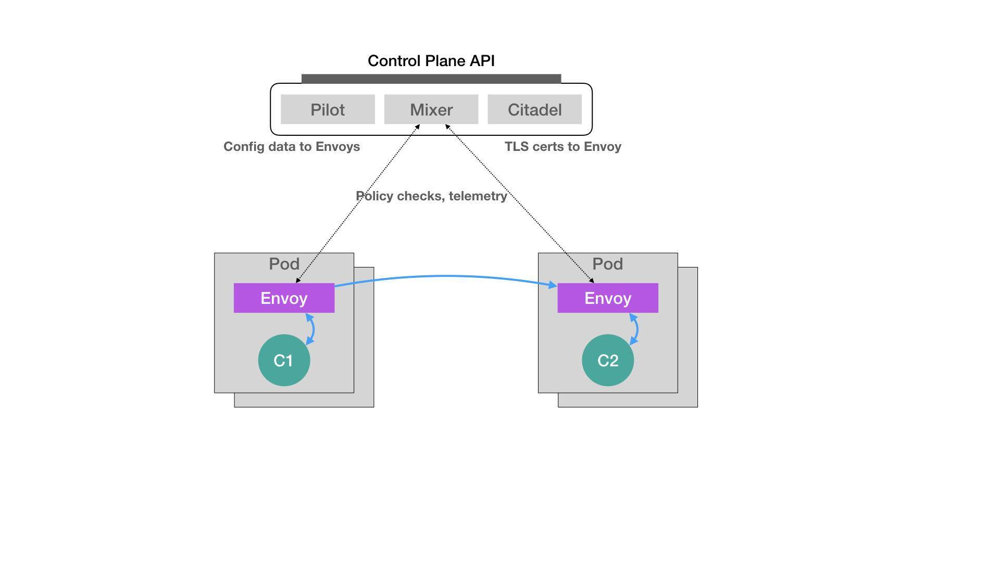

- 00 开篇词 打通“容器技术”的任督二脉.md.html
- 01 预习篇 · 小鲸鱼大事记（一）：初出茅庐.md.html
- 02 预习篇 · 小鲸鱼大事记（二）：崭露头角.md.html
- 03 预习篇 · 小鲸鱼大事记（三）：群雄并起.md.html
- 04 预习篇 · 小鲸鱼大事记（四）：尘埃落定.md.html
- 05 白话容器基础（一）：从进程说开去.md.html
- 06 白话容器基础（二）：隔离与限制.md.html
- 07 白话容器基础（三）：深入理解容器镜像.md.html
- 08 白话容器基础（四）：重新认识Docker容器.md.html
- 09 从容器到容器云：谈谈Kubernetes的本质.md.html
- 10 Kubernetes一键部署利器：kubeadm.md.html
- 11 从0到1：搭建一个完整的Kubernetes集群.md.html
- 12 牛刀小试：我的第一个容器化应用.md.html
- 13 为什么我们需要Pod？.md.html
- 14 深入解析Pod对象（一）：基本概念.md.html
- 15 深入解析Pod对象（二）：使用进阶.md.html
- 16 编排其实很简单：谈谈“控制器”模型.md.html
- 17 经典PaaS的记忆：作业副本与水平扩展.md.html
- 18 深入理解StatefulSet（一）：拓扑状态.md.html
- 19 深入理解StatefulSet（二）：存储状态.md.html
- 20 深入理解StatefulSet（三）：有状态应用实践.md.html
- 21 容器化守护进程的意义：DaemonSet.md.html
- 22 撬动离线业务：Job与CronJob.md.html
- 23 声明式API与Kubernetes编程范式.md.html
- 24 深入解析声明式API（一）：API对象的奥秘.md.html
- 25 深入解析声明式API（二）：编写自定义控制器.md.html
- 26 基于角色的权限控制：RBAC.md.html
- 27 聪明的微创新：Operator工作原理解读.md.html
- 28 PV、PVC、StorageClass，这些到底在说啥？.md.html
- 29 PV、PVC体系是不是多此一举？从本地持久化卷谈起.md.html
- 30 编写自己的存储插件：FlexVolume与CSI.md.html
- 31 容器存储实践：CSI插件编写指南.md.html
- 32 浅谈容器网络.md.html
- 33 深入解析容器跨主机网络.md.html
- 34 Kubernetes网络模型与CNI网络插件.md.html
- 35 解读Kubernetes三层网络方案.md.html
- 36 为什么说Kubernetes只有soft multi-tenancy？.md.html
- 37 找到容器不容易：Service、DNS与服务发现.md.html
- 38 从外界连通Service与Service调试“三板斧”.md.html
- 39 谈谈Service与Ingress.md.html
- 40 Kubernetes的资源模型与资源管理.md.html
- 41 十字路口上的Kubernetes默认调度器.md.html
- 42 Kubernetes默认调度器调度策略解析.md.html
- 43 Kubernetes默认调度器的优先级与抢占机制.md.html
- 44 Kubernetes GPU管理与Device Plugin机制.md.html
- 45 幕后英雄：SIG-Node与CRI.md.html
- 46 解读 CRI 与 容器运行时.md.html
- 47 绝不仅仅是安全：Kata Containers 与 gVisor.md.html
- 48 Prometheus、Metrics Server与Kubernetes监控体系.md.html
- 49 Custom Metrics_ 让Auto Scaling不再“食之无味”.md.html
- 50 让日志无处可逃：容器日志收集与管理.md.html
- 51 谈谈Kubernetes开源社区和未来走向.md.html
- 52 答疑：在问题中解决问题，在思考中产生思考.md.html
- 特别放送 2019 年，容器技术生态会发生些什么？.md.html
- 特别放送 基于 Kubernetes 的云原生应用管理，到底应该怎么做？.md.html
- 结束语 Kubernetes：赢开发者赢天下.md.html
- 捐赠
23 声明式API与Kubernetes编程范式
你好，我是张磊。今天我和你分享的主题是：声明式API与Kubernetes编程范式。
在前面的几篇文章中，我和你分享了很多Kubernetes的API对象。这些API对象，有的是用来描述应用，有的则是为应用提供各种各样的服务。但是，无一例外地，为了使用这些API对象提供的能力，你都需要编写一个对应的YAML文件交给Kubernetes。
这个YAML文件，正是Kubernetes声明式API所必须具备的一个要素。不过，是不是只要用YAML文件代替了命令行操作，就是声明式API了呢？
举个例子。我们知道，Docker Swarm的编排操作都是基于命令行的，比如：
$ docker service create --name nginx --replicas 2 nginx
$ docker service update --image nginx:1.7.9 nginx
像这样的两条命令，就是用Docker Swarm启动了两个Nginx容器实例。其中，第一条create命令创建了这两个容器，而第二条update命令则把它们“滚动更新”成了一个新的镜像。
对于这种使用方式，我们称为命令式命令行操作。
那么，像上面这样的创建和更新两个Nginx容器的操作，在Kubernetes里又该怎么做呢？
这个流程，相信你已经非常熟悉了：我们需要在本地编写一个Deployment的YAML文件：
apiVersion: apps/v1
kind: Deployment
metadata:
name: nginx-deployment
spec:
selector:
matchLabels:
app: nginx
replicas: 2
template:
metadata:
labels:
app: nginx
spec:
containers:
- name: nginx
image: nginx
ports:
- containerPort: 80
然后，我们还需要使用kubectl create命令在Kubernetes里创建这个Deployment对象：
$ kubectl create -f nginx.yaml
这样，两个Nginx的Pod就会运行起来了。
而如果要更新这两个Pod使用的Nginx镜像，该怎么办呢？
我们前面曾经使用过kubectl set image和kubectl edit命令，来直接修改Kubernetes里的API对象。不过，相信很多人都有这样的想法，我能不能通过修改本地YAML文件来完成这个操作呢？这样我的改动就会体现在这个本地YAML文件里了。
当然可以。
比如，我们可以修改这个YAML文件里的Pod模板部分，把Nginx容器的镜像改成1.7.9，如下所示：
...
spec:
containers:
- name: nginx
image: nginx:1.7.9
而接下来，我们就可以执行一句kubectl replace操作，来完成这个Deployment的更新：
$ kubectl replace -f nginx.yaml
可是，上面这种基于YAML文件的操作方式，是“声明式API”吗？
并不是。
对于上面这种先kubectl create，再replace的操作，我们称为命令式配置文件操作。
也就是说，它的处理方式，其实跟前面Docker Swarm的两句命令，没什么本质上的区别。只不过，它是把Docker命令行里的参数，写在了配置文件里而已。
那么，到底什么才是“声明式API”呢？
答案是，kubectl apply命令。
在前面的文章中，我曾经提到过这个kubectl apply命令，并推荐你使用它来代替kubectl create命令（你也可以借此机会再回顾一下第12篇文章《牛刀小试：我的第一个容器化应用》中的相关内容）。
现在，我就使用kubectl apply命令来创建这个Deployment：
$ kubectl apply -f nginx.yaml
这样，Nginx的Deployment就被创建了出来，这看起来跟kubectl create的效果一样。
然后，我再修改一下nginx.yaml里定义的镜像：
...
spec:
containers:
- name: nginx
image: nginx:1.7.9
这时候，关键来了。
在修改完这个YAML文件之后，我不再使用kubectl replace命令进行更新，而是继续执行一条kubectl apply命令，即：
$ kubectl apply -f nginx.yaml
这时，Kubernetes就会立即触发这个Deployment的“滚动更新”。
可是，它跟kubectl replace命令有什么本质区别吗？
实际上，你可以简单地理解为，kubectl replace的执行过程，是使用新的YAML文件中的API对象，替换原有的API对象；而kubectl apply，则是执行了一个对原有API对象的PATCH操作。
类似地，kubectl set image和kubectl edit也是对已有API对象的修改。
更进一步地，这意味着kube-apiserver在响应命令式请求（比如，kubectl replace）的时候，一次只能处理一个写请求，否则会有产生冲突的可能。而对于声明式请求（比如，kubectl apply），一次能处理多个写操作，并且具备Merge能力。
这种区别，可能乍一听起来没那么重要。而且，正是由于要照顾到这样的API设计，做同样一件事情，Kubernetes需要的步骤往往要比其他项目多不少。
但是，如果你仔细思考一下Kubernetes项目的工作流程，就不难体会到这种声明式API的独到之处。
接下来，我就以Istio项目为例，来为你讲解一下声明式API在实际使用时的重要意义。
在2017年5月，Google、IBM和Lyft公司，共同宣布了Istio开源项目的诞生。很快，这个项目就在技术圈儿里，掀起了一阵名叫“微服务”的热潮，把Service Mesh这个新的编排概念推到了风口浪尖。
而Istio项目，实际上就是一个基于Kubernetes项目的微服务治理框架。它的架构非常清晰，如下所示：
- 在上面这个架构图中，我们不难看到Istio项目架构的核心所在。Istio最根本的组件，是运行在每一个应用Pod里的Envoy容器。
这个Envoy项目是Lyft公司推出的一个高性能C++网络代理，也是Lyft公司对Istio项目的唯一贡献。
而Istio项目，则把这个代理服务以sidecar容器的方式，运行在了每一个被治理的应用Pod中。我们知道，Pod里的所有容器都共享同一个Network Namespace。所以，Envoy容器就能够通过配置Pod里的iptables规则，把整个Pod的进出流量接管下来。
这时候，Istio的控制层（Control Plane）里的Pilot组件，就能够通过调用每个Envoy容器的API，对这个Envoy代理进行配置，从而实现微服务治理。
我们一起来看一个例子。
假设这个Istio架构图左边的Pod是已经在运行的应用，而右边的Pod则是我们刚刚上线的应用的新版本。这时候，Pilot通过调节这两Pod里的Envoy容器的配置，从而将90%的流量分配给旧版本的应用，将10%的流量分配给新版本应用，并且，还可以在后续的过程中随时调整。这样，一个典型的“灰度发布”的场景就完成了。比如，Istio可以调节这个流量从90%-10%，改到80%-20%，再到50%-50%，最后到0%-100%，就完成了这个灰度发布的过程。
更重要的是，在整个微服务治理的过程中，无论是对Envoy容器的部署，还是像上面这样对Envoy代理的配置，用户和应用都是完全“无感”的。
这时候，你可能会有所疑惑：Istio项目明明需要在每个Pod里安装一个Envoy容器，又怎么能做到“无感”的呢？
实际上，Istio项目使用的，是Kubernetes中的一个非常重要的功能，叫作Dynamic Admission Control。
在Kubernetes项目中，当一个Pod或者任何一个API对象被提交给APIServer之后，总有一些“初始化”性质的工作需要在它们被Kubernetes项目正式处理之前进行。比如，自动为所有Pod加上某些标签（Labels）。
而这个“初始化”操作的实现，借助的是一个叫作Admission的功能。它其实是Kubernetes项目里一组被称为Admission Controller的代码，可以选择性地被编译进APIServer中，在API对象创建之后会被立刻调用到。
但这就意味着，如果你现在想要添加一些自己的规则到Admission Controller，就会比较困难。因为，这要求重新编译并重启APIServer。显然，这种使用方法对Istio来说，影响太大了。
所以，Kubernetes项目为我们额外提供了一种“热插拔”式的Admission机制，它就是Dynamic Admission Control，也叫作：Initializer。
现在，我给你举个例子。比如，我有如下所示的一个应用Pod：
apiVersion: v1
kind: Pod
metadata:
name: myapp-pod
labels:
app: myapp
spec:
containers:
- name: myapp-container
image: busybox
command: ['sh', '-c', 'echo Hello Kubernetes! && sleep 3600']
可以看到，这个Pod里面只有一个用户容器，叫作：myapp-container。
接下来，Istio项目要做的，就是在这个Pod YAML被提交给Kubernetes之后，在它对应的API对象里自动加上Envoy容器的配置，使这个对象变成如下所示的样子：
apiVersion: v1
kind: Pod
metadata:
name: myapp-pod
labels:
app: myapp
spec:
containers:
- name: myapp-container
image: busybox
command: ['sh', '-c', 'echo Hello Kubernetes! && sleep 3600']
- name: envoy
image: lyft/envoy:845747b88f102c0fd262ab234308e9e22f693a1
command: ["/usr/local/bin/envoy"]
...
可以看到，被Istio处理后的这个Pod里，除了用户自己定义的myapp-container容器之外，多出了一个叫作envoy的容器，它就是Istio要使用的Envoy代理。
那么，Istio又是如何在用户完全不知情的前提下完成这个操作的呢？
Istio要做的，就是编写一个用来为Pod“自动注入”Envoy容器的Initializer。
首先，Istio会将这个Envoy容器本身的定义，以ConfigMap的方式保存在Kubernetes当中。这个ConfigMap（名叫：envoy-initializer）的定义如下所示：
apiVersion: v1
kind: ConfigMap
metadata:
name: envoy-initializer
data:
config: |
containers:
- name: envoy
image: lyft/envoy:845747db88f102c0fd262ab234308e9e22f693a1
command: ["/usr/local/bin/envoy"]
args:
- "--concurrency 4"
- "--config-path /etc/envoy/envoy.json"
- "--mode serve"
ports:
- containerPort: 80
protocol: TCP
resources:
limits:
cpu: "1000m"
memory: "512Mi"
requests:
cpu: "100m"
memory: "64Mi"
volumeMounts:
- name: envoy-conf
mountPath: /etc/envoy
volumes:
- name: envoy-conf
configMap:
name: envoy
相信你已经注意到了，这个ConfigMap的data部分，正是一个Pod对象的一部分定义。其中，我们可以看到Envoy容器对应的containers字段，以及一个用来声明Envoy配置文件的volumes字段。
不难想到，Initializer要做的工作，就是把这部分Envoy相关的字段，自动添加到用户提交的Pod的API对象里。可是，用户提交的Pod里本来就有containers字段和volumes字段，所以Kubernetes在处理这样的更新请求时，就必须使用类似于git merge这样的操作，才能将这两部分内容合并在一起。
所以说，在Initializer更新用户的Pod对象的时候，必须使用PATCH API来完成。而这种PATCH API，正是声明式API最主要的能力。
接下来，Istio将一个编写好的Initializer，作为一个Pod部署在Kubernetes中。这个Pod的定义非常简单，如下所示：
apiVersion: v1
kind: Pod
metadata:
labels:
app: envoy-initializer
name: envoy-initializer
spec:
containers:
- name: envoy-initializer
image: envoy-initializer:0.0.1
imagePullPolicy: Always
我们可以看到，这个envoy-initializer使用的envoy-initializer:0.0.1镜像，就是一个事先编写好的“自定义控制器”（Custom Controller），我将会在下一篇文章中讲解它的编写方法。而在这里，我要先为你解释一下这个控制器的主要功能。
我曾在第16篇文章《编排其实很简单：谈谈“控制器”模型》中和你分享过，一个Kubernetes的控制器，实际上就是一个“死循环”：它不断地获取“实际状态”，然后与“期望状态”作对比，并以此为依据决定下一步的操作。
而Initializer的控制器，不断获取到的“实际状态”，就是用户新创建的Pod。而它的“期望状态”，则是：这个Pod里被添加了Envoy容器的定义。
我还是用一段Go语言风格的伪代码，来为你描述这个控制逻辑，如下所示：
for {
// 获取新创建的Pod
pod := client.GetLatestPod()
// Diff一下，检查是否已经初始化过
if !isInitialized(pod) {
// 没有？那就来初始化一下
doSomething(pod)
}
}
- 如果这个Pod里面已经添加过Envoy容器，那么就“放过”这个Pod，进入下一个检查周期。
- 而如果还没有添加过Envoy容器的话，它就要进行Initialize操作了，即：修改该Pod的API对象（doSomething函数）。
这时候，你应该立刻能想到，Istio要往这个Pod里合并的字段，正是我们之前保存在envoy-initializer这个ConfigMap里的数据（即：它的data字段的值）。
所以，在Initializer控制器的工作逻辑里，它首先会从APIServer中拿到这个ConfigMap：
func doSomething(pod) {
cm := client.Get(ConfigMap, "envoy-initializer")
}
然后，把这个ConfigMap里存储的containers和volumes字段，直接添加进一个空的Pod对象里：
func doSomething(pod) {
cm := client.Get(ConfigMap, "envoy-initializer")
newPod := Pod{}
newPod.Spec.Containers = cm.Containers
newPod.Spec.Volumes = cm.Volumes
}
现在，关键来了。
Kubernetes的API库，为我们提供了一个方法，使得我们可以直接使用新旧两个Pod对象，生成一个TwoWayMergePatch：
func doSomething(pod) {
cm := client.Get(ConfigMap, "envoy-initializer")
newPod := Pod{}
newPod.Spec.Containers = cm.Containers
newPod.Spec.Volumes = cm.Volumes
// 生成patch数据
patchBytes := strategicpatch.CreateTwoWayMergePatch(pod, newPod)
// 发起PATCH请求，修改这个pod对象
client.Patch(pod.Name, patchBytes)
}
有了这个TwoWayMergePatch之后，Initializer的代码就可以使用这个patch的数据，调用Kubernetes的Client，发起一个PATCH请求。
这样，一个用户提交的Pod对象里，就会被自动加上Envoy容器相关的字段。
当然，Kubernetes还允许你通过配置，来指定要对什么样的资源进行这个Initialize操作，比如下面这个例子：
apiVersion: admissionregistration.k8s.io/v1alpha1
kind: InitializerConfiguration
metadata:
name: envoy-config
initializers:
// 这个名字必须至少包括两个 "."
- name: envoy.initializer.kubernetes.io
rules:
- apiGroups:
- "" // 前面说过， ""就是core API Group的意思
apiVersions:
- v1
resources:
- pods
这个配置，就意味着Kubernetes要对所有的Pod进行这个Initialize操作，并且，我们指定了负责这个操作的Initializer，名叫：envoy-initializer。
而一旦这个InitializerConfiguration被创建，Kubernetes就会把这个Initializer的名字，加在所有新创建的Pod的Metadata上，格式如下所示：
apiVersion: v1
kind: Pod
metadata:
initializers:
pending:
- name: envoy.initializer.kubernetes.io
name: myapp-pod
labels:
app: myapp
...
可以看到，每一个新创建的Pod，都会自动携带了metadata.initializers.pending的Metadata信息。
这个Metadata，正是接下来Initializer的控制器判断这个Pod有没有执行过自己所负责的初始化操作的重要依据（也就是前面伪代码中isInitialized()方法的含义）。
这也就意味着，当你在Initializer里完成了要做的操作后，一定要记得将这个metadata.initializers.pending标志清除掉。这一点，你在编写Initializer代码的时候一定要非常注意。
此外，除了上面的配置方法，你还可以在具体的Pod的Annotation里添加一个如下所示的字段，从而声明要使用某个Initializer：
apiVersion: v1
kind: Pod
metadata
annotations:
"initializer.kubernetes.io/envoy": "true"
...
在这个Pod里，我们添加了一个Annotation，写明： initializer.kubernetes.io/envoy=true。这样，就会使用到我们前面所定义的envoy-initializer了。
以上，就是关于Initializer最基本的工作原理和使用方法了。相信你此时已经明白，Istio项目的核心，就是由无数个运行在应用Pod中的Envoy容器组成的服务代理网格。这也正是Service Mesh的含义。
备注：如果你对这个Demo感兴趣，可以在这个GitHub链接里找到它的所有源码和文档。这个Demo，是我fork自Kelsey Hightower的一个同名的Demo。
而这个机制得以实现的原理，正是借助了Kubernetes能够对API对象进行在线更新的能力，这也正是Kubernetes“声明式API”的独特之处：
- 首先，所谓“声明式”，指的就是我只需要提交一个定义好的API对象来“声明”，我所期望的状态是什么样子。
- 其次，“声明式API”允许有多个API写端，以PATCH的方式对API对象进行修改，而无需关心本地原始YAML文件的内容。
- 最后，也是最重要的，有了上述两个能力，Kubernetes项目才可以基于对API对象的增、删、改、查，在完全无需外界干预的情况下，完成对“实际状态”和“期望状态”的调谐（Reconcile）过程。
所以说，声明式API，才是Kubernetes项目编排能力“赖以生存”的核心所在，希望你能够认真理解。
此外，不难看到，无论是对sidecar容器的巧妙设计，还是对Initializer的合理利用，Istio项目的设计与实现，其实都依托于Kubernetes的声明式API和它所提供的各种编排能力。可以说，Istio是在Kubernetes项目使用上的一位“集大成者”。
要知道，一个Istio项目部署完成后，会在Kubernetes里创建大约43个API对象。
所以，Kubernetes社区也看得很明白：Istio项目有多火热，就说明Kubernetes这套“声明式API”有多成功。这，既是Google Cloud喜闻乐见的事情，也是Istio项目一推出就被Google公司和整个技术圈儿热捧的重要原因。
而在使用Initializer的流程中，最核心的步骤，莫过于Initializer“自定义控制器”的编写过程。它遵循的，正是标准的“Kubernetes编程范式”，即：
如何使用控制器模式，同Kubernetes里API对象的“增、删、改、查”进行协作，进而完成用户业务逻辑的编写过程。
这，也正是我要在后面文章中为你详细讲解的内容。
总结
在今天这篇文章中，我为你重点讲解了Kubernetes声明式API的含义。并且，通过对Istio项目的剖析，我为你说明了它使用Kubernetes的Initializer特性，完成Envoy容器“自动注入”的原理。
事实上，从“使用Kubernetes部署代码”，到“使用Kubernetes编写代码”的蜕变过程，正是你从一个Kubernetes用户，到Kubernetes玩家的晋级之路。
而，如何理解“Kubernetes编程范式”，如何为Kubernetes添加自定义API对象，编写自定义控制器，正是这个晋级过程中的关键点，也是我要在后面几篇文章中分享的核心内容。
此外，基于今天这篇文章所讲述的Istio的工作原理，尽管Istio项目一直宣称它可以运行在非Kubernetes环境中，但我并不建议你花太多时间去做这个尝试。
毕竟，无论是从技术实现还是在社区运作上，Istio与Kubernetes项目之间都是紧密的、唇齿相依的关系。如果脱离了Kubernetes项目这个基础，那么这条原本就不算平坦的“微服务”之路，恐怕会更加困难重重。
思考题
你是否对Envoy项目做过了解？你觉得为什么它能够击败Nginx以及HAProxy等竞品，成为Service Mesh体系的核心？
感谢你的收听，欢迎你给我留言，也欢迎分享给更多的朋友一起阅读。
© 2019 - 2023 Liangliang Lee. Powered by gin and hexo-theme-book.